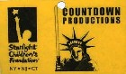
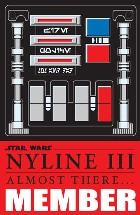
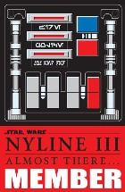
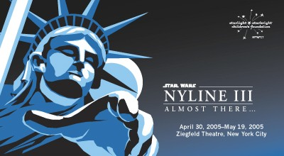

Throughout the past six years, we here at NYLine have been blessed to count among our ranks several amazingly talented professional artists and print designers, who have graciously shared their gifts with the organization. We're extremely proud of the products that have been created for our members and charity - and we love getting stopped on the street when somebody catches a glance at our t-shirts. Our final items for the eBay auction benefiting the Starlight Starbright Children's Foundation are a celebration of the NYLine experience, and make rare, high-quality collectibles. We think that you'll find them to be most impressive.
You are bidding on a fantastic one of a kind lot of NYLine items. Seven items encompassing the entire experience of the NYLine, and the wait on the sidewalk for the Star Wars prequels are included. Here they are, available for the first time all at once!
This lot includes:
The 3 official NYLine t-shirts, each bearing a unique image of The Statue of Liberty brandishing a lightsaber. The 1999 shirt "The Menacing New Yorkers" has never been reprinted, and this is the ONLY unworn shirt available anywhere. Each shirt is size XL. For more information and close-up views of these shirts, click here!


The 3 badges worn by line members during each of the lines. The 1999 badge features our "Liberty Jedi" mascot, and is laminated. The 2002 badge is a play on a famous NYC symbol – the MetroCard and is beautifully printed on a heavy plastic. The 2005 badge is a replica of Darth Vader's chest plate, with secret NYLine-related messages hidden in the Aurabesh text, and is also printed on a heavy plastic. Take a closer look, and read more about the badges here!
 

A wonderful souvenir booklet chronicling the entire NYLine experience is also included. This item features pictures, stories, press and anything else you can think of that made these events long remembered, all in a beautifully designed and printed booklet.
This is a wonderful auction item for anyone looking to grab up a piece of Star Wars or New York history!
In addition to this lot, we are also auctioning off several of these, and other, items separately.
We will be putting up for grabs two authentic NYLine II "Revenge of the NYLine" t-shirts, size XL. Playing off of the Revenge of the Jedi Teaser poster, this shirt was a huge hit with line members and Star Wars fans. For more information, and a close-up look at the shirt, click here.
Another item will feature a set of two official NYLine II badges. These were worn by members of the NYLine during the weeks leading up to the premiere of Star Wars: Episode II. Its design with the "JediMasterCard" logo is an homage to the NYC MetroCard. One card is gold for general line members and one is blue, carrying the word "STAFF" (based on the first MetroCard incarnation). This is a very rare and limited collectible and is a must for all fans of Star Wars and New York. Two of these sets will be available.
The final item up for bids will be a set of two offical NYLine III badges. These are worn by members of the NYLine during the weeks leading up to the premiere of Star Wars: Episode III. Its design is an homage to the infamous chest plate of Darth Vader. The card also bears the NYLine logo with its tagline, "Almost there..." as well as designations of "Staff" or "Member", with a blue or red background respectively. This is a very rare and limited collectible for all Star Wars and unique paraphernalia collectors. Two of these items will be available.
The NYLine auction for the Starlight Starbright Children's Foundation starts on April 21st and runs through May 17th. A detailed catalogue of the items up for bids can be found at www.nyline.org/auction, and a picture gallery of the items can be found here. Good luck to all of the bidders, and thank you for your support! We hope that when the dust settles, there will a few happy collectors and many happy Starlight kids!